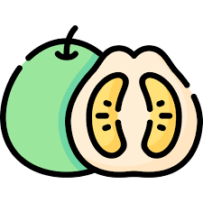
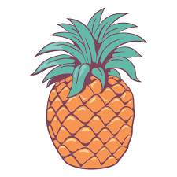
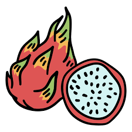
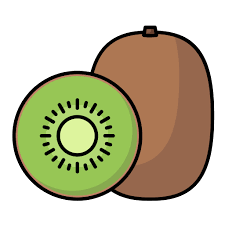

¿Cuál es la etiqueta principal utilizada para crear una tabla en HTML?
La etiqueta principal es "table"
¿Qué etiqueta se utiliza para definir una fila en una tabla?
Se usa la etiqueta "tr"
¿Cuál es la etiqueta utilizada para crear una celda de encabezado en una tabla?
Se usa la etiqueta "th"
¿Cuál es la etiqueta utilizada para crear una celda de datos en una tabla?
se usa "td"
¿Qué atributo se utiliza para especificar cuántas columnas debe abarcar una celda?
se utiliza "colspan" seguido de un numero
¿Qué atributo se utiliza para especificar cuántas filas debe abarcar una celda?
Se usa "rowspan"
Si necesitamos crear una tabla con 10 filas ¿qué etiqueta y cuántas veces se debe utilizar para definir las filas?
se usan 10 "tr" para hacer eso
Tabla 1
| Nombre | imagen | Tipo | calorias |
|---|---|---|---|
| Manzana | Fruta Pomacéa | 52 | |
| Pomelo |  | Citrus | 42 |
| Anana |  | Bromeliáceas | 50 |
| Pitahaya |  | Cactaceae | 54 |
| Kiwi |  | Actinidiáceas | 61 |
Tabla 2
| Pos | | Numero | | Piloto | | Marca | | Vueltas | | Tiempo | | Diferencia |
|---|---|---|---|---|---|---|
| 39º | 122 | Jakos, Andres | |
18 | 29:13.920 | | 7 vtas |
| 27º | 114 | Ferrante, Gastón | |
25 | 40:20.353 | | 51.814 |
| 11º | 23 | Gini, Esteban | |
25 | 39:52.880 | | 24.341 |
| 8º | 88 | Trosset, Nicolás | |
25 | 39:39.844 | | 11.305 |
| 6º | 19 | Ciantini, Diego | |
25 | 39:37.838 | | 9.299 |
| 2º | 121 | Craparo, Elio | |
25 | 39:29.740 | | 1.201 |